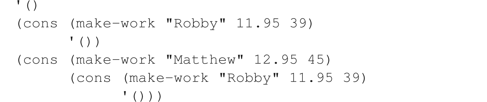
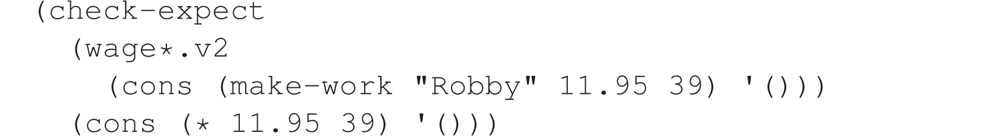
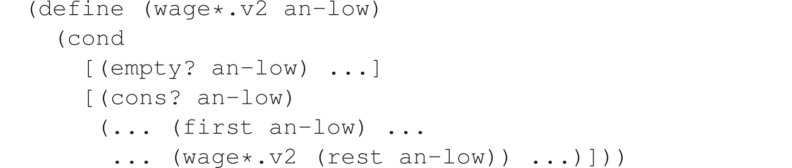
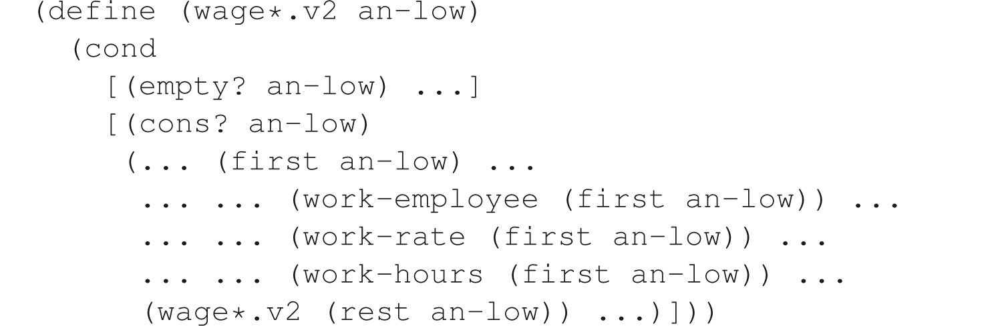
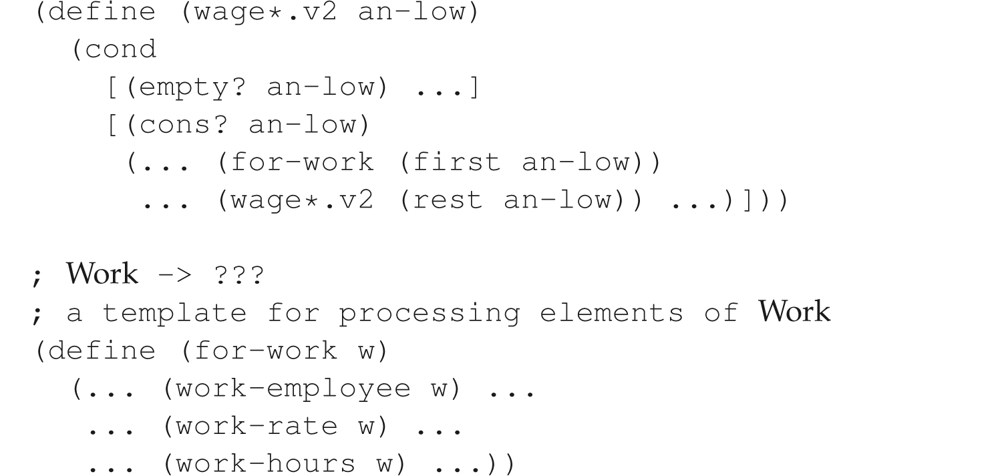
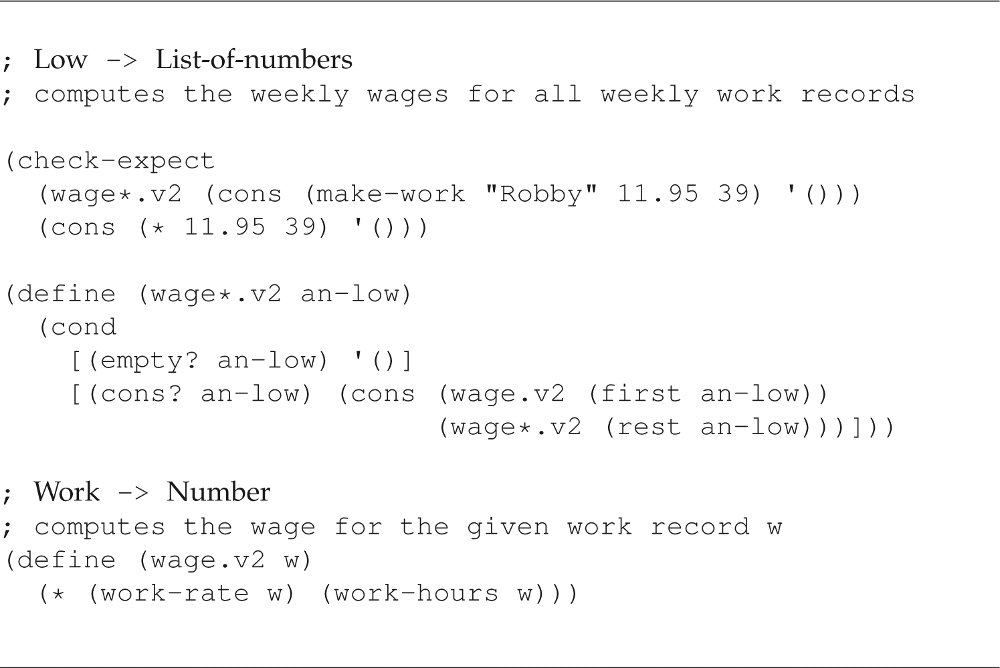

10.2 Structures in Lists
Representing a work week as a number is a bad choice because the printing of a paycheck requires more information than hours worked per week. Also, not all employees earn the same amount per hour. Fortunately a list may contain items other than atomic values; indeed, lists may contain whatever values we want, especially structures.
Our running example calls for just such a data representation. Instead of numbers, we use structures that represent employees plus their work hours and pay rates:
(define-struct work [employee rate hours])
; A (piece of) Work is a structure:
; (make-work String Number Number)
; interpretation (make-work n r h) combines the name
; with the pay rate r and the number of hours h
While this representation is still simplistic, it is just enough of an additional challenge because it forces us to formulate a data definition for lists that contain structures:
; Low (short for list of works) is one of:
; -- '()
; -- (cons Work Low)
; interpretation an instance of Low represents the
; hours worked for a number of employees
Here are three elements of Low:

Use the data definition to explain why these pieces of data belong to Low.
Stop! Also use the data definition to generate two more examples.
When you work on real-world projects, you won’t use such suffixes; instead you will use a tool for managing different versions of code.
Now that you know that the definition of Low makes sense, it is time to redesign the function wage* so that it consumes elements of Low, not just lists of numbers:
; Low -> List-of-numbers
; computes the weekly wages for the given records
(define (wage*.v2 an-low)
'())
The suffix “.v2” at the end of the function name informs every reader of the code that this is a second, revised version of the function. In this case, the revision starts with a new signature and an adapted purpose statement. The header is the same as above.
The third step of the design recipe is to work through an example. Let’s start with the second list above. It contains one work record, namely, (make-work "Robby" 11.95 39). Its interpretation is that "Robby" worked for 39 hours and that he is paid at the rate of $11.95 per hour. Hence his wage for the week is $466.05, that is, (* 11.95 39). The desired result for wage*.v2 is therefore (cons 466.05 '()). Naturally, if the input list contained two work records, we would perform this kind of computation twice, and the result would be a list of two numbers. Stop! Determine the expected result for the third data example above.
Note on Numbers Keep in mind that BSL—unlike most other programming languages—understands decimal numbers just like you do, namely, as exact fractions. A language such as Java, for example, would produce 466.04999999999995 for the expected wage of the first work record. Since you cannot predict when operations on decimal numbers behave in this strange way, you are better off writing down such examples as

just to prepare yourself for other programming languages. Then again, writing down the example in this style also means you have really figured out how to compute the wage. End
From here we move on to the development of the template. If you use the template questions, you quickly get this much:

because the data definition consists of two clauses, because it introduces '() in the first clause and consed structures in the second, and so on. But you also realize that you know even more about the input than this template expresses. For example, you know that (first an-low) extracts a structure of three fields from the given list. This seems to suggest the addition of three more expressions to the template:

This template lists all potentially interesting data.
We use a different strategy here. Specifically, we suggest that you create and refer to a separate function template whenever you are developing a template for a data definition that refers to other data definitions:

Splitting the templates leads to a natural partition of work into functions and among functions; none of them grows too large, and all of them relate to a specific data definition.
Finally, you are ready to program. As always you start with the simple-looking case, which is the first cond line here. If wage*.v2 is applied to '(), you expect '() back and that settles it. Next you move on to the second line and remind yourself of what these expressions compute:
1. (first an-low) extracts the first work structure from the list;
2. (for-work …) says that you wish to design a function that processes work structures;
3. (rest an-low) extracts the rest of the given list; and
4. (wage*.v2 (rest an-low)) determines the list of wages for all the work records other than the first one, according to the purpose statement of the function.
If you are stuck here, use the table method from figure 54.
If you understand it all, you see that it is enough to cons the two expressions together:
assuming that for-work computes the wage for the first work record. In short, you have finished the function by adding another entry to your wish list of functions.
Since for-work is a name that just serves as a stand-in and since it is a bad name for this function, let’s call the function wage.v2 and write down its complete wish-list entry:
; Work -> Number
; computes the wage for the given work record w
(define (wage.v2 w)
0)
The design of this kind of function is extensively covered in Part I and thus doesn’t need any additional explanation here. Figure 65 shows the final result of developing wage and wage*.v2.

Figure 65: Computing the wages from work records
Exercise 166. The wage*.v2 function consumes a list of work records and produces a list of numbers. Of course, functions may also produce lists of structures.
Develop a data representation for paychecks. Assume that a paycheck contains two distinctive pieces of information: the employee’s name and an amount. Then design the function wage*.v3. It consumes a list of work records and computes a list of paychecks from it, one per record.
In reality, a paycheck also contains an employee number. Develop a data representation for employee information and change the data definition for work records so that it uses employee information and not just a string for the employee’s name. Also change your data representation of paychecks so that it contains an employee’s name and number, too. Finally, design wage*.v4, a function that maps lists of revised work records to lists of revised paychecks.
Note on Iterative Refinement This exercise demonstrates the iterative refinement of a task. Instead of using data representations that include all relevant information, we started from simplistic representation of paychecks and gradually made the representation realistic. For this simple program, refinement is overkill; later we will encounter situations where iterative refinement is not just an option but a necessity. 
Exercise 167. Design the function sum, which consumes a list of Posns and produces the sum of all of its x-coordinates.
Exercise 168. Design the function translate. It consumes and produces lists of Posns. For each (make-posn x y) in the former, the latter contains (make-posn x (+ y 1)). We borrow the word “translate” from geometry, where the movement of a point by a constant distance along a straight line is called a translation.
Exercise 169. Design the function legal. Like translate from exercise 168, the function consumes and produces a list of Posns. The result contains all those Posns whose x-coordinates are between 0 and 100 and whose y-coordinates are between 0 and 200.
Exercise 170. Here is one way to represent a phone number:
(define-struct phone [area switch four])
; A Phone is a structure:
; (make-phone Three Three Four)
; A Three is a Number between 100 and 999.
; A Four is a Number between 1000 and 9999.
Design the function replace. It consumes and produces a list of Phones. It replaces all occurrence of area code 713 with 281.